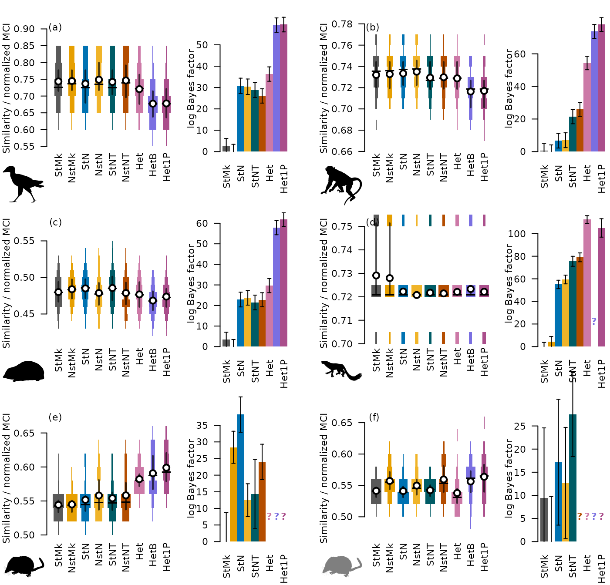

vignettes/wct-comparison.Rmd
wct-comparison.Rmd
library("neotrans")
models7 <- c("by_kv", "ns_kv", "by_n_kv", "ns_n_kv", "by_nt_kv", "ns_nt_kv",
"hg_kv", "hg_b_kv", "hg2_kv")
projects <- Config()$syab
marginals7 <- GetMarginals(projects, models7)
# uuids for PhyloPic silhouettes
sil <- c(
"07200" = "6affa688-6da7-400b-8a28-ea2b4e5a02ba",
"07202" = "eedde61f-3402-4f7c-9350-49b74f5e1dba",
"07203" = "a89e224a-e374-4be0-a9bb-3481b16f87fb",
"07204" = "822c549b-b29b-47eb-9fe3-dc5bbb0abccb",
"07205" = "822c549b-b29b-47eb-9fe3-dc5bbb0abccb",
"07206" = "e191c6d0-184c-4bb5-9e49-8b354f4e0014"
)
OutputPlot("tr_similar", 7.3, 7, function() {
layout(rbind(1:5, 6:10, 11:15), widths = c(1, 0.6, 0.14, 1, 0.6))
gap <- TRUE
panel <- 1
for (pID in projects[c(1:3, 6:4)]) {
TreeSimSpindleRow(pID, marginals7, models7, sil[[pID]],
Annotate1 = function() Panel(panel, -1.8, 0))
panel <- panel + 1
if (gap) {
oPar <- par(mar = rep(0, 4))
plot.new()
par(oPar)
}
gap <- !gap
}
})
statV <- c("by_kv", "by_n_kv", "by_nt_kv")
nsV <- c("ns_kv", "ns_n_kv", "ns_nt_kv")
freeNTV <- c("by_nt_kv", "ns_nt_kv")
freeNV <- c("by_n_kv", "ns_n_kv")
fixedNV <- c("by_kv", "ns_kv")
homoV <- c(statV, nsV)
hetV <- setdiff(models7, homoV)
# Field et al. 2020
mean0 <- sapply(TreeSimilarities("07200", models7, "MCI"), mean)
range(mean0[homoV])## [1] 0.7368110 0.7488201
mean0[hetV]## hg_kv hg_b_kv hg2_kv
## 0.7205811 0.6773149 0.6779279
# Pattinson et al. 2015
mean2 <- sapply(TreeSimilarities("07202", models7, "MCI"), mean)
mean2[nsV] - mean2[statV]## ns_kv ns_n_kv ns_nt_kv
## 0.0006937904 0.0016658996 0.0003990498
range(mean2)## [1] 0.7163546 0.7350071
mean2[freeNV] - mean2[fixedNV]## by_n_kv ns_n_kv
## 0.001353044 0.002325153
mean2[freeNTV] - mean2[freeNV]## by_nt_kv ns_nt_kv
## -0.003940173 -0.005207023
# Asher 2007
mean3 <- sapply(TreeSimilarities("07203", models7, "MCI"), mean)
signif(mean3, 3)## by_kv ns_kv by_n_kv ns_n_kv by_nt_kv ns_nt_kv hg_kv hg_b_kv
## 0.480 0.484 0.485 0.479 0.486 0.479 0.477 0.468
## hg2_kv
## 0.474
mean3[nsV] - mean3[statV]## ns_kv ns_n_kv ns_nt_kv
## 0.003905407 -0.006267524 -0.006859651
range(mean3)## [1] 0.4684008 0.4855875
mean3[freeNV] - mean2[fixedNV]## by_n_kv ns_n_kv
## -0.2469655 -0.2539268
mean3[freeNTV] - mean2[freeNV]## by_nt_kv ns_nt_kv
## -0.2477537 -0.2562793
# Huttenlocker et al. 2018
mean6 <- sapply(TreeSimilarities("07206", models7, "MCI"), mean)
range(mean6[-(1:2)])## [1] 0.7207539 0.7233216
marginals7[, "07206"] - marginals7["ns_kv", "07206"]## by_kv ns_kv by_n_kv ns_n_kv by_nt_kv ns_nt_kv hg_kv hg_b_kv
## -4.37 0.00 50.65 55.04 71.17 74.64 108.07 NA
## hg2_kv
## 100.68
# Halliday All
mean5 <- sapply(TreeSimilarities("07205", models7, "MCI"), mean)
signif(mean5, 2)## by_kv ns_kv by_n_kv ns_n_kv by_nt_kv ns_nt_kv hg_kv hg_b_kv
## 0.54 0.54 0.55 0.56 0.55 0.56 0.58 0.59
## hg2_kv
## 0.60
signif(mean5[nsV], 2)## ns_kv ns_n_kv ns_nt_kv
## 0.54 0.56 0.56
signif(mean5[statV], 2)## by_kv by_n_kv by_nt_kv
## 0.54 0.55 0.55
signif(mean5[hetV], 2)## hg_kv hg_b_kv hg2_kv
## 0.58 0.59 0.60
# Halliday Reduced
mean4 <- sapply(TreeSimilarities("07204", models7, "MCI"), mean)
signif(mean4, 3)## by_kv ns_kv by_n_kv ns_n_kv by_nt_kv ns_nt_kv hg_kv hg_b_kv
## 0.541 0.557 0.541 0.550 0.542 0.560 0.538 0.556
## hg2_kv
## 0.564
stat4 <- mean4[statV]
ns4 <- mean4[nsV]
signif(ns4 - stat4, 2)## ns_kv ns_n_kv ns_nt_kv
## 0.0160 0.0087 0.0170## [1] 0.538 0.564